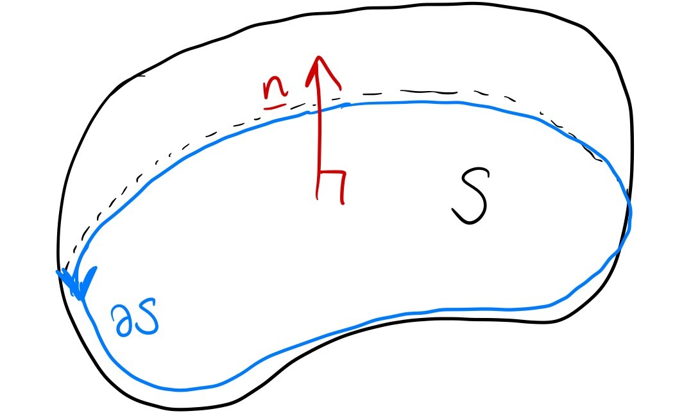
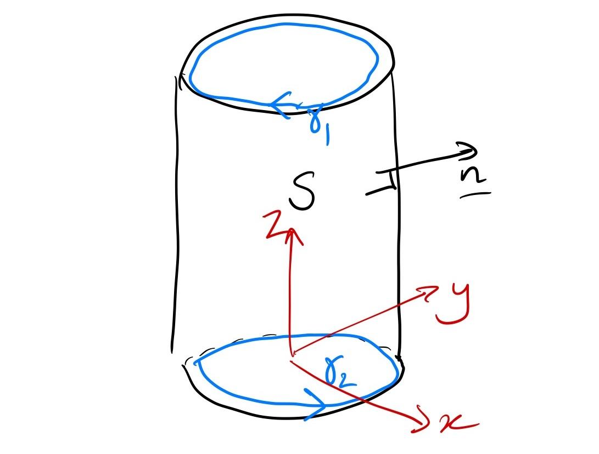

Stokes’ theorem
Stokes’ theorem is one form of the Fundamental Theorem of Calculus in three dimensions, and it relates surface integrals to line integrals. Specifically, it says that \[ \int_S (\nabla \times {\mathbf{F}})\cdot d{\mathbf{S}} = \int_{\partial S} {\mathbf{F}} \cdot d{\mathbf{s}}. \] The only thing that’s new here is the curve \(\partial S\). It says that
The flux integral of the curl of a vector field over a surface \(S\) is the line integral of the vector field over \(\partial S\).
We won’t attempt a proof of this theorem, though in class we’ll see some intuition behind it. It is possible to prove it with techniques you know, but once you learn differential geometry it’s a special case of a much easier theorem.
The boundary of a surface
The symbol \(\partial S\) is the boundary of the surface \(S\).1 The surface is a 2D object, and the boundary is a curve, a 1D object. Specifically, given the direction the normal is pointing, the boundary obeys the right-hand rule as per the diagram.

Think: what’s the boundary of the surface \(x^2+y^2+z^2=1\), \(z\geq 0\).
This is a hemisphere. Hopefully you can immediately spot the boundary, but if not, try substituting the condition \(z\geq 0\) at its limit, i.e. \(z=0\), into the equation \(x^2+y^2+z^2=0\).
So we get \(x^2+y^2=0\), \(z=0\), which is a circle.
I didn’t tell you the direction of the normal, so you can’t tell me which way this is oriented.
Sometimes, the boundary of a surface has multiple parts. In this case, you can split the line integral into several simpler ones, making sure that at each separate curve, the right-hand rule is respected. The example below should make this a bit clearer.
Conditions
For the theorem to apply, the surface \(S\) has to be oriented. That means that the normal is well-defined everywhere on the surface.
Most things you can think of are orientable: a sphere, a sheet of paper, a donut. You then have to choose which direction the normal goes and it becomes oriented.
The usual counter example is the Mobius band: this doesn’t have a well defined normal, because you can point it one way, and then follow it all the way around the band and it’s suddenly pointing the opposite way.
Example
Let \(S\) be the curved surface of the cylinder \(x^2+y^2=1\), \(0\leq z\leq 2\), with normal pointing out. Evaluate the integral \[ \int_S \left(\nabla\times [z^2,x^2,y^2]\right) \cdot d{\mathbf{S}} \] both directly and using Stokes’ theorem.
First, sketch the surface to understand it and its boundary.
Directly
The obvious parameterisation is, taking inspiration from cylindrical co-ordinates, \[ [x,y,z] = [\cos u,\sin u, v]\qquad 0\leq u<2\pi,\,0\leq v \leq 2. \]
Then we have \[ d{\mathbf{S}} = {\frac{\partial {\mathbf{r}}}{\partial u}}\times{\frac{\partial {\mathbf{r}}}{\partial v}} du\, dv = [-\sin u,\cos u,0]\times[0,0,1] du\,dv = [\cos u,\sin u,0] du\,dv \] and this normal does point out, as we want.
The integrand is \[\nabla\times [z^2,x^2,y^2] = [2y, 2z, 2x] = [2\sin u,2v,2\cos u]\] so putting it all together, \[ \begin{aligned} \int_S \left(\nabla\times [z^2,x^2,y^2]\right) \cdot d{\mathbf{S}} &= \int_0^{2\pi} du \int_0^2 dv [2\sin u,2v,2\cos u]\cdot[\cos u,\sin u,0]\\ &=\int_0^{2\pi} du \int_0^2 dv \left(2\sin u \cos u + 2v\sin u\right)\\ &=\int_0^{2\pi} du \int_0^2 dv \left(\sin 2u + 2v\sin u\right)\\ &= \int_0^{2\pi} du \left(2\sin 2u + 4\sin u\right)\\ &= 0. \end{aligned} \]
Stokes theorem
We need to evaluate \[ \int_{\partial S} [z^2,x^2,y^2] \cdot d{\mathbf{s}}, \] but crucially \(\partial S\) has two parts, that we will call \(\gamma_1\) and \(\gamma_2\), and we write \(\partial S = \gamma_1+\gamma_2\).

For \(\gamma_1\), we parameterise \[[x,y,z] = [\cos t,\,\sin t,\,0], \qquad 0\leq t < 2\pi.\] Then \(d{\mathbf{s}} = [-\sin t,\cos t,0]dt\) so the integral is \[ \int_{\gamma_1} [z^2,x^2,y^2] \cdot d{\mathbf{s}} = \int_0^{2\pi} [0,\cos^2 t,\sin^2 t]\cdot [-\sin t,\cos t,0]dt = \int_0^{2\pi} \cos^3 t\, dt = 0. \]
For \(\gamma_2\), we parameterise \[[x,y,z] = [\cos t,\,-\sin t,\,2], \qquad 0\leq t < 2\pi.\] Notice the extra minus sign! This is because we need to go the opposite direction from usual, from the diagram. Now \(d{\mathbf{s}} = [\sin t,\cos t,0]dt\) so the integral is \[ \int_{\gamma_2} [z^2,x^2,y^2] \cdot d{\mathbf{s}} = \int_0^{2\pi} [4,\cos^2 t,\sin^2 t]\cdot [\sin t,\cos t,0]dt = \int_0^{2\pi} \left(4\sin t + \cos^3 t\right)\, dt = 0. \] So overall \[ \int_S \left(\nabla\times [z^2,x^2,y^2]\right) \cdot d{\mathbf{S}}=\int_{\partial S} [z^2,x^2,y^2] \cdot d{\mathbf{s}} = \int_{\gamma_1} [z^2,x^2,y^2] \cdot d{\mathbf{s}} + \int_{\gamma_2} [z^2,x^2,y^2] \cdot d{\mathbf{s}} = 0, \] which is exactly the same answer as we got before!
To change the direction of a line integral, you can just subtract the integral instead of changing the direction of the parameterisation.
Closed surface
A closed surface is one that has an “inside” and an “outside” - the surface forms a barrier in 3D space. Think of a bubble, or a donut.
Think: What’s the boundary of a closed surface? How does Stokes’ theorem apply?
It doesn’t have a boundary! So the right-hand side of Stoke’s theorem is zero, and we just have \[ \int_S (\nabla \times {\mathbf{F}})\cdot d{\mathbf{S}} = 0 \]
For a closed surface, we sometimes use the symbol \(\oint\). The theorem is \[ \oint_S (\nabla \times {\mathbf{F}})\cdot d{\mathbf{S}} = 0 \] and this is most obviously a connection between integration and differentiation: the flux integral and the curl are basically opposites for a closed surface.
Example
Using Stokes’ theorem and the fact that \[ \nabla \times [xz,\,xy,\,yz] = [z,x,y], \] evaluate the integral \[ \oint_S [x+z,\,y+x,\,z+y]\cdot d{\mathbf{S}} \] where \(S\) is the sphere \(x^2+y^2+z^2=1\).
Obviously we could compute this integral directly, but the question wants us to use the theorem. It’s not exactly in the form we need, but notice \[[x+z,\,y+x,\,z+y] = [x,y,z]+[z,x,y] = \hat{{\mathbf{n}}} + \nabla \times [xz,\,xy,\,yz].\]
So then \[ \oint_S [x+z,\,y+x,\,z+y]\cdot d{\mathbf{S}} = \oint_S \hat{{\mathbf{n}}} \cdot \hat{{\mathbf{n}}} dS + \oint_S \left(\nabla \times [xz,\,xy,\,yz]\right) \cdot d{\mathbf{S}}. \] The second integral is zero by the divergence theorem, because \(S\) is a closed surface.
A unit vector dotted with itself is 1, so the first integral simplies to \[\oint_S dS = 4\pi,\] the surface area of \(S\), which is the final answer.
Footnotes
Why do we use the same symbol as for partial derivatives, you may wonder? This will require proper differential geometry to understand, for now it’s just a coincidence.↩︎